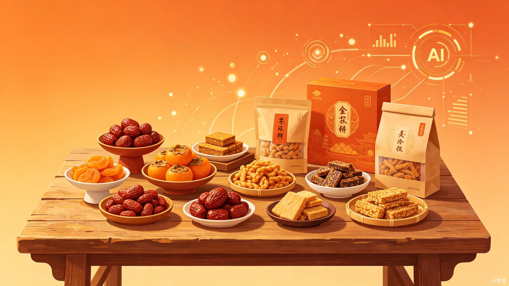
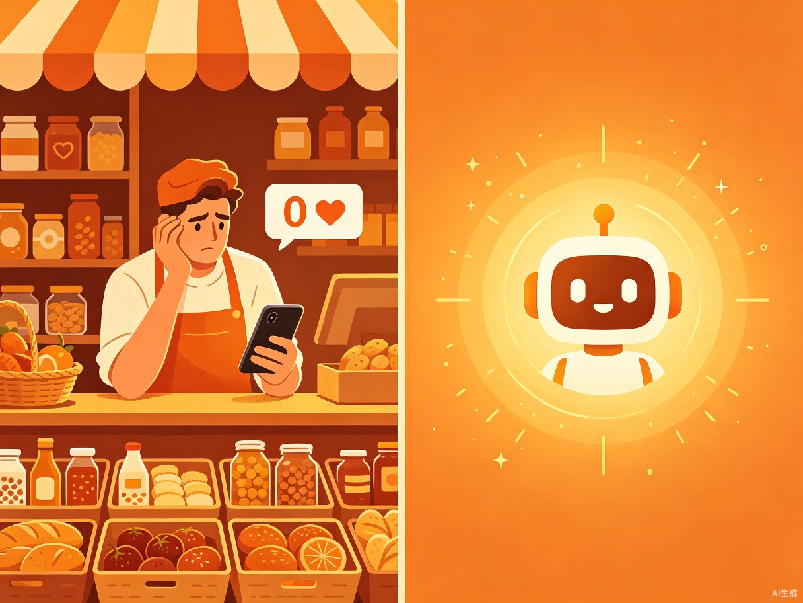

用 AI 降低地方特产小商家的内容创作门槛，让更多被地理标签埋没的好产品被看见。
地方特产小商家不会做小红书内容，好东西卖不出去。很多地方特色食品——刺梨干、龙须酥、牦牛肉干——品质很好，但商家既不会写文案也不会拍图，发了笔记没人看，白白错过线上流量。物言 AI 就是为解决这一问题而生。
地方特产小商家不会做小红书内容，好东西卖不出去。产品品质优秀却因内容创作能力不足，无法触达线上消费者，错失大量流量和销售机会。
过年回家发现老家的特产店老板还在靠熟人朋友圈卖货，小红书账号发了几十篇只有几十个赞。不是产品不行，是内容能力跟不上。AI 能帮他们把门槛降到零。
一个 Web 端 AI 内容生成工具。输入产品名、品类、产地、目标人群，15 秒自动生成可直接发布的小红书爆款笔记 + 配图拍摄建议。
React 19 + Tailwind CSS v4 + Vite + FastAPI + Pydantic v2 + 豆包多模态 LLM + SSE 流式推送。前后端分离架构，兼顾性能与可维护性。
地方食品特产小商家、合作社、伴手礼店、农户品牌运营人员。

不知道爆款长什么样，写出来的文案像硬广，没人看
产品图拍得像淘宝详情页，不符合小红书调性
小商家就 1-2 个人，没预算请运营和摄影师
凭感觉发十几篇，数据都不好，不知道问题出在哪
产品名、品类、产地、目标人群
自动分析产品特点，匹配最优内容风格
15 秒生成可发布笔记 + 拍摄建议
复制到小红书即可发布，零门槛上手
不是"工程师觉得爆款长什么样"，而是"数据证明爆款长什么样"。通过真实小红书数据 + 三层筛选机制（基础热度、质量验证、传播验证），提炼出可复制的爆款创作方法论。
像闺蜜分享旅游发现一样自然，口语化表达，轻松真诚的种草感。
以解决"送什么"焦虑为核心，场景化推荐，贴心实用。
以"本地人"视角推荐正宗特产，附带避坑指南，建立信任感。
成分党视角的专业测评，用数据说话，理性种草。
挖掘特产背后的文化与故事，以叙事方式传递温度。
制造强烈对比效果，利用猎奇心理和反转情节吸引眼球。
根据产品特点和目标人群，自动匹配最优内容风格组合，无需用户了解运营知识。
支持上传产品图片，AI 读图提炼卖点，即使不会描述产品也能生成优质内容。
告诉你 3-6 张图分别拍什么、怎么拍，从构图到光线全覆盖。
生成过程实时可见，SSE 流式推送让用户不再面对空白等待。
LLM 调用失败退规则模板，格式解析失败退默认值，确保始终有内容产出。
基于真实小红书数据训练的爆款模型，不是拍脑袋的模板，而是有据可依的方法论。
传统方式写一篇合格的小红书笔记至少1-2 小时，用物言 AI 15 秒出稿。效率提升超过 200 倍，让小商家把时间花在产品和客户上，而非内容创作的低效循环中。
前后端分离架构，前端使用 React 19 + Tailwind CSS v4 构建现代化响应式界面，后端基于 FastAPI + Pydantic v2 提供高性能 API 服务，接入豆包多模态 LLM 进行内容生成，通过 SSE 流式推送实现实时交互体验。
React 19 + Tailwind CSS v4 + Vite 构建，响应式设计，移动端友好
FastAPI + Pydantic v2 高性能异步服务，类型安全，API 文档自动生成
豆包多模态 LLM 驱动，支持图文理解，SSE 流式输出，双兜底保障